Specs, casos de uso y prototipos del chatbot: desde conocer un plan hasta revisar y confirmar una matrícula. Material para validar la propuesta antes de integrar la IA y los servicios.
Prototipos con datos simulados · Integración productiva pendienteID: 002-chatbot-clientes · Fecha: 2026-11-03 · Estado: Specs y prototipos; integración productiva pendiente. Petición: conversación con IA y acciones guiadas con reglas, desde preregistro y acceso hasta horarios y matrícula. Contexto: análisis de la base. Contratos afectados: MOD-01 a MOD-05, enlazados allí.
Un asistente en español entiende mensajes libres sobre el gimnasio y acompaña los formularios y acciones existentes. La IA orienta y propone; las reglas del servidor deciden el acceso y la validez de los datos. Una matrícula requiere confirmación explícita en pantalla.
Este documento define el comportamiento del producto futuro. La entrega actual incluye el plan, las ECU de los tres casos de uso y los prototipos para revisión conjunta. La demostración usa datos y respuestas fijos, sin conexión a IA, autenticación, pagos o matrículas reales.
Como visitante, quiero preguntar por planes y cómo registrarme para completar el preregistro y continuar al pago en los formularios existentes.
Prueba independiente: sin sesión, consultar el catálogo, abrir registro con un plan válido y recibir orientación sobre pago/activación sin consultar datos privados.
Escenarios: se muestran planes vigentes reales; una solicitud de datos de otra persona se rechaza ofreciendo ayuda permitida.
Como cliente, quiero ayuda para ingresar y continuar mi recorrido, entendiendo qué hacer si mi cuenta espera activación o mi sesión expiró.
Prueba independiente: abrir acceso desde el chat y autenticar en el formulario; cerrar/cambiar sesión borra conversación, propuestas y respuestas pendientes.
Escenarios: el cliente habilitado accede a sus propias acciones; uno pendiente/vencido recibe orientación pública sin saltar controles ni revelar su estado privado a visitantes.
Como cliente habilitado, quiero buscar una clase y confirmar mi inscripción para matricularme en una fecha concreta con cupo disponible.
Prueba independiente: buscar una sesión, revisar el resumen, pulsar Confirmar matrícula y verificar la inscripción en Mi horario.
Escenarios: buscar no inscribe; un cupo agotado antes de confirmar produce rechazo del servidor; doble clic no crea dos matrículas.
| Criterio | Evidencia prevista; todavía no ejecutada |
| CA-01 | Escenario E1 |
| CA-02 | Escenario E2 |
| CA-03 | Escenario E3 |
| CA-04 | Escenario E4 |
| CA-05 | Escenario E5 |
| CA-06 | Escenario E6 |
| CA-07 | Escenario E7 |
| CA-08 | Escenario E8 |
| CA-09 | Escenario E9 |
Turno efímero, acción validada, selección de sesión y cuota técnica compartida. No se crean otras entidades de cliente, pago o matrícula. Detalles en modelo.
Los nueve escenarios pasan con proveedor falso, sin pagos/correos reales. Cero escrituras de negocio desde herramientas del modelo y cero consultas privadas con identidad tomada del texto. Todas las matrículas propuestas necesitan confirmación y resultado verificable del backend.
US1 corresponde a CU-CHAT-01 / P01–P03; US2 a CU-CHAT-02 / P04–P06; US3 a CU-CHAT-03 / P07–P10. El prototipo navegable muestra la Spec resumida junto a cada recorrido. La matriz de revisión relaciona cada pantalla con sus CA. Validar el prototipo no acredita los criterios que requieren servidor, proveedor o concurrencia reales. La relación con las cinco tareas de programación identifica reglas, IA, interfaz y conexiones con los servicios actuales. La barra de programación del prototipo muestra las tareas que corresponden a cada recorrido.
Conservar Vue/Pinia y FastAPI/Supabase, capas e inyección de adaptadores. Separar endpoints público/privado, herramientas de lectura y confirmación humana. La IA es una integración backend; sus claves nunca son VITE_*. Reutilizar la RPC de matrícula y los flujos de identidad, preregistro y pagos.
Memoria conversacional efímera. Cuotas en almacenamiento compartido con actualización atómica y acceso exclusivo del backend. Integración habilitada por configuración tras elegir proveedor/modelo y presupuesto. Sin entrenamiento, embeddings o base vectorial en este alcance.
Solo preregistro, acceso, planes/promociones, horarios e inscripción propia. Preguntas ajenas reciben redirección breve a esos temas. Fuera: administración, consejos médicos, tienda, cambios de membresía, cancelaciones y envío de notificaciones desde el chat.
No adjuntar al modelo campos de DNI, teléfono, correo, nombres personales, contraseñas, tokens, checkout IDs o tarjetas. Filtrar patrones sensibles en texto libre y resolver localmente entradas detectadas o sospechosas, dirigiendo al formulario. No prometer anonimización infalible del texto; limitación explícita en decisiones. La aplicación muestra datos privados y confirmaciones fuera de la prosa generada.
No consultar preregistros por DNI/correo mediante API pública ni prometer activación al pagar. No contratar servicios, activar claves, desplegar o ejecutar transacciones reales durante la planificación.
| Caso | Respuesta prevista | Criterio |
| Mensaje vacío/excesivo o instrucciones para saltar reglas | Validar esquema y alcance; sin ejecución | CA-01, CA-07, CA-08 |
| Catálogo caído o promoción agotada | Informar indisponibilidad; no inventar oferta | CA-02 |
| Sesión vencida durante respuesta | Descartar respuesta/propuesta y abrir acceso | CA-03 |
| «Mañana» cerca de medianoche o servicio ambiguo | Reloj Lima; pedir precisión cuando falte | CA-04 |
| Propuesta antigua o cupo ocupado | Recargar datos y revalidar al confirmar | CA-05 |
| Doble clic, dos pestañas o pérdida de red | Bloquear/reconciliar y deduplicar en backend | CA-06 |
| Enlace externo o ID inventado por IA | Rechazar salida y no habilitar acción | CA-07 |
| Cuota agotada o proveedor caído | Ayuda guiada y enlaces originales | CA-08, CA-09 |
Primera versión web en español para visitantes/clientes; sin WhatsApp, voz o historial persistente. Los límites operativos del plan son valores iniciales configurables. Proveedor/modelo y presupuesto se concretan en T001 antes de habilitar la integración. Se conservan las reglas actuales de activación y membresía.
| Elemento de la ECU | Especificación |
| Actor principal | Visitante interesado en inscribirse. |
| Actor de apoyo | Asistente del gimnasio; formulario y pasarela existentes en la implementación futura. |
| Objetivo | Comprender la oferta y completar el preregistro mediante el formulario. |
| Disparador | El visitante pregunta por planes o pulsa «Quiero registrarme». |
| Precondiciones | Acceso público; catálogo disponible para mostrar una oferta. No requiere sesión. |
| Postcondición de éxito | Solicitud de preregistro preparada para continuar al pago. Confirmar el pago y activar la cuenta son pasos posteriores distintos. |
| Postcondición de fallo | No se crea una inscripción o cuenta activa por una respuesta del chat. El visitante conserva acceso al formulario. |
Flujo principal
Flujos alternativos
Reglas: nombre/correo máximo 50, DNI 8 dígitos, teléfono 9; mensaje del chat máximo 150 sin contador/regla visible. No introducir identidad o credenciales en la conversación.
Trazabilidad: US1; CA-01, CA-02, CA-07, CA-08, CA-09. Prototipos P01–P03 en demostración.
| Elemento de la ECU | Especificación |
| Actor principal | Cliente que desea ingresar. |
| Actor de apoyo | Asistente y autenticación existente. |
| Objetivo | Acceder al área autorizada y entender los impedimentos del acceso. |
| Disparador | Pulsar «Ya tengo una cuenta» o preguntar cómo ingresar. |
| Precondiciones | Formulario de acceso disponible. La elegibilidad se valida en servidor en la implementación futura. |
| Postcondición de éxito | Sesión de cliente habilitado y acceso a sus propias funciones. |
| Postcondición de fallo | No se abre el área privada; se ofrece orientación sin revelar datos ajenos. |
Flujo principal
Flujos alternativos
Reglas: el servidor identifica al cliente; el texto del chat no establece identidad o permisos. No consultar solicitudes por DNI/correo en una API pública. No enviar contraseñas al modelo.
Trazabilidad: US2; CA-03, CA-07, CA-09. Prototipos P04–P06 en demostración.
| Elemento de la ECU | Especificación |
| Actor principal | Cliente autenticado y habilitado. |
| Actor de apoyo | Asistente, consulta de sesiones y servicio de matrícula existente. |
| Objetivo | Encontrar una sesión e inscribirse con confirmación explícita. |
| Disparador | Preguntar por una clase o pulsar «Buscar horarios». |
| Precondiciones | Cuenta habilitada, membresía vigente y fecha/servicio seleccionados. |
| Postcondición de éxito | Una matrícula verificada para cliente, horario y fecha concretos; actualiza Mi horario. |
| Postcondición de fallo | No se anuncia inscripción ni se reintenta una escritura cuyo resultado se desconoce. |
Flujo principal
Flujos alternativos
Reglas: fechas de negocio America/Lima; confirmación separada del texto de IA; el modelo solo consulta y propone. No hay matrícula autónoma, cobro o activación.
Trazabilidad: US3; CA-04, CA-05, CA-06, CA-07, CA-09. Prototipos P07–P10 en demostración.
Las cinco tareas de programación acordadas determinan las interacciones del prototipo y su integración posterior. Este documento complementa las tres ECU, la Spec y el plan técnico.
Pantallas: P01–P10; transversal a los tres casos de uso.
Demostrado localmente: nombres/correos de hasta 50 caracteres; DNI de 8 dígitos y teléfono de 9; mensaje máximo 150 sin contador; acciones delimitadas; confirmación separada del chat; bloqueo local de doble clic; limpieza al salir.
Código del prototipo: formularios y control de acciones y campo de conversación.
Programación del producto: repetir la validación en el servidor, derivar cliente/rol desde sesión, limitar frecuencia y presupuesto entre instancias y preservar las RPC existentes. Un bloqueo visual no sustituye estos controles.
Criterios: CA-03, CA-05, CA-06, CA-07, CA-08.
Pantallas: conversación de P01–P10 y alternativa «IA no disponible».
Demostrado localmente: mensajes, sugerencias permitidas y continuidad con botones ante indisponibilidad. Las respuestas se seleccionan por reglas fijas; no hay un proveedor de IA conectado.
Programación del producto: implementar el puerto/adaptador de proveedor, salida estructurada, consultas permitidas, contexto mínimo, timeout y reserva de presupuesto. Los datos de negocio y las confirmaciones provienen del sistema. Las claves se configuran en backend; el modelo no recibe herramientas de escritura.
Criterios: CA-01, CA-07, CA-08.
Pantallas: las diez pantallas y sus versiones de escritorio/móvil.
Demostrado localmente: navegación, formularios, conversación, botones, tarjetas de planes/sesiones, confirmación, errores y estados de carga.
Código del prototipo: HTML, estilos e interacciones.
Programación del producto: trasladar el diseño a componentes Vue y composables, con estado por sesión en Pinia e inyección mediante el bootstrap. Separar presentación, aplicación, dominio e infraestructura y mantener el comportamiento del recorrido existente. Los controles de revisión académica quedan fuera de la UI del cliente.
Criterios: CA-01, CA-03, CA-09.
Pantallas: P01–P06; CU-CHAT-01 y CU-CHAT-02.
Demostrado localmente: selección de plan, formulario con datos de ejemplo, continuidad al pago, ingreso simulado, cuenta pendiente, membresía vencida y salida.
Programación del producto: reutilizar catálogo, formulario de registro, Stripe, acceso con contraseña/Google y validación de sesión existentes. La solicitud, el pago y la activación mantienen estados distintos. El chat orienta y abre formularios; no crea cuentas activas por una respuesta conversacional.
Criterios: CA-02, CA-03, CA-07.
Pantallas: P07–P10; CU-CHAT-03.
Demostrado localmente: servicio y fecha, consulta de ejemplo, resumen, confirmación explícita, inscripción local única, cupo agotado y reconciliación simulada de respuesta perdida. Buscar o escribir «confirma» no matricula.
Programación del producto: consultar sesiones reales en America/Lima; usar la capacidad actual de matrícula tras el clic de confirmación; revalidar identidad, vigencia, cupo y duplicidad en backend; refrescar Mi horario y reconciliar respuestas inciertas antes de permitir reintentos. Conservar la RPC especializada y sus bloqueos frente a concurrencia real.
Criterios: CA-04, CA-05, CA-06, CA-07.
| Caso de uso | Programación asociada | Qué mostrar |
| CU-CHAT-01 · Preregistro | PG01, PG02, PG03, PG04 | Plan, conversación, formulario y continuidad al pago |
| CU-CHAT-02 · Acceso | PG01, PG02, PG03, PG04 | Formulario, restricciones de cuenta y limpieza al salir |
| CU-CHAT-03 · Horarios/matrícula | PG01, PG02, PG03, PG05 | Consulta, confirmación y alternativas ante fallos |
La barra «Programación asociada» del prototipo muestra esta correspondencia. El PDF incluye este documento. Las 24 tareas de tasks.md son el desglose técnico para ejecutar las cinco tareas; permanecen pendientes de integración. Las comprobaciones del prototipo validan su navegación local.
CA-01 · CA-02 · Consultar planes y comenzar el recorrido.
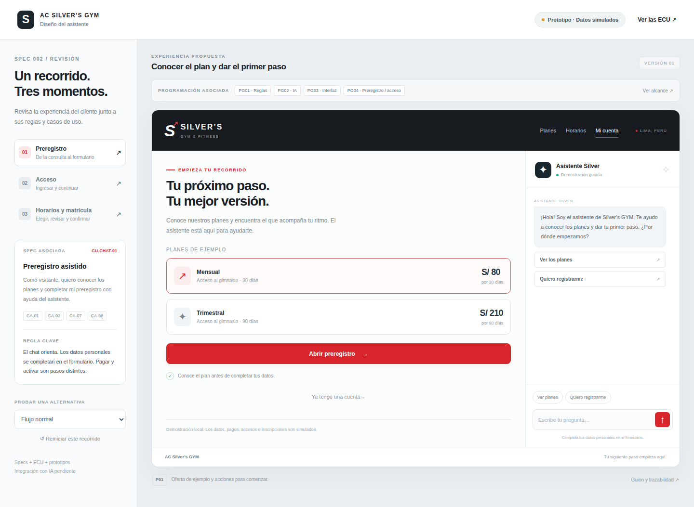
CA-02 · CA-07 · CA-08 · Completar datos en el formulario y respetar sus límites.
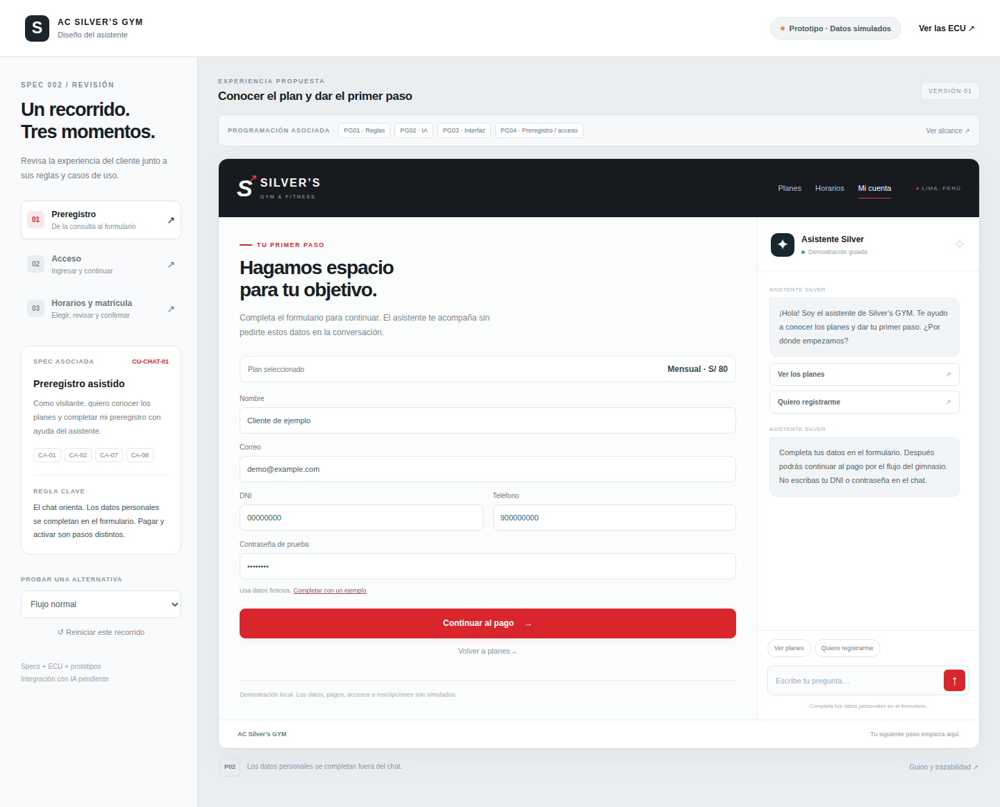
CA-02 · Diferenciar solicitud pendiente, pago y activación.
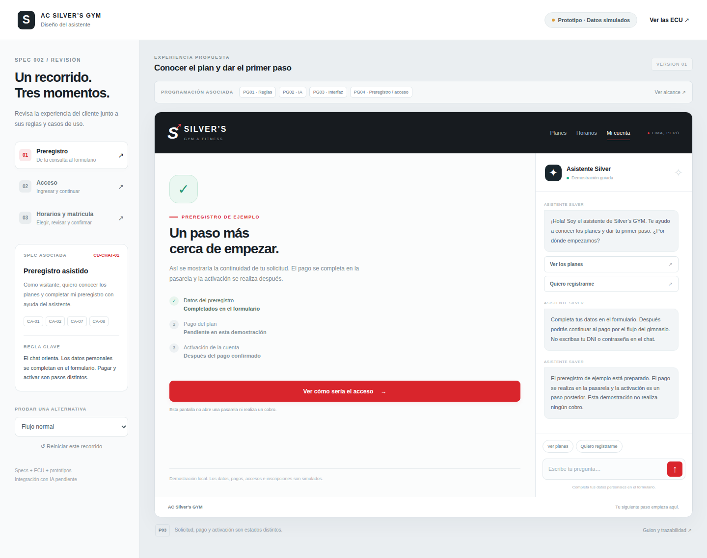
CA-03 · CA-07 · Usar el formulario de acceso fuera de la conversación.
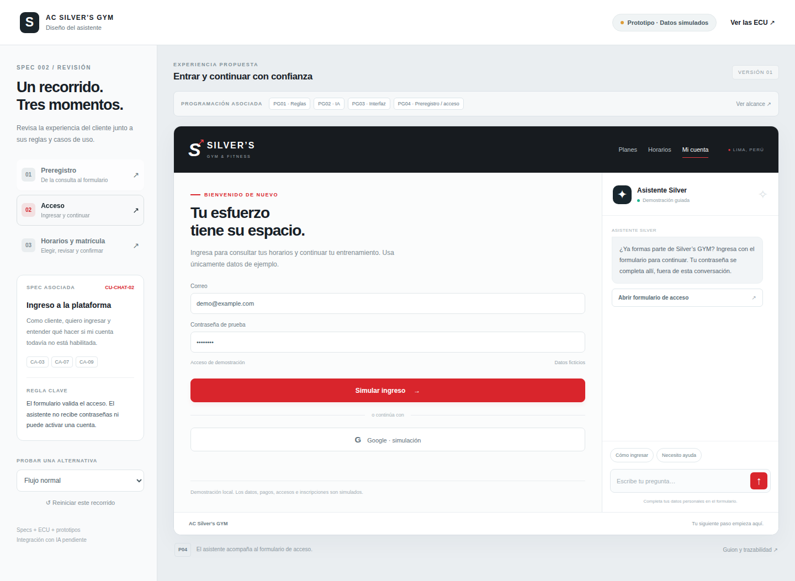
CA-03 · Mantener el bloqueo de una cuenta no habilitada.
CA-03 · Mantener el bloqueo de una cuenta no habilitada.
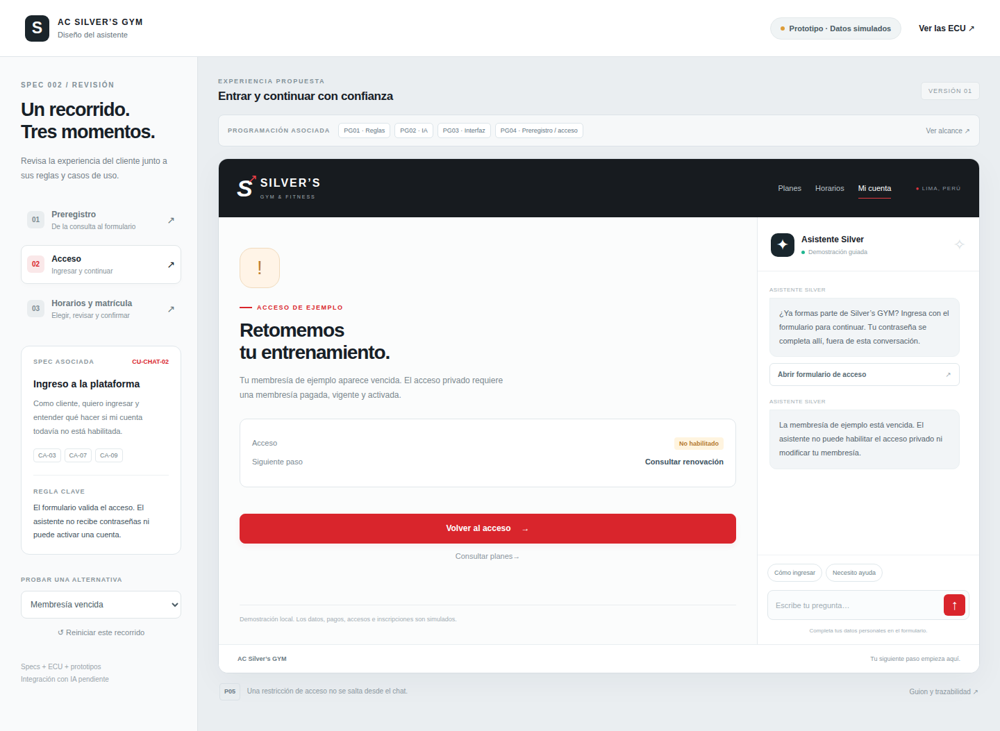
CA-03 · Mostrar acciones propias tras el ingreso simulado.
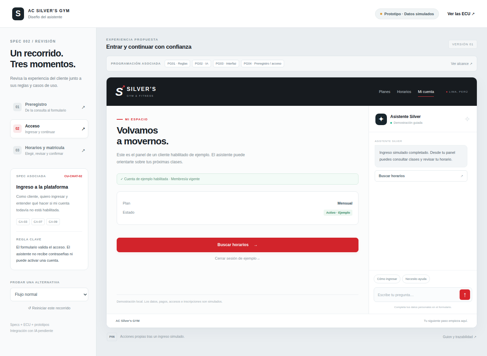
CA-04 · Buscar una sesión por servicio y fecha concreta.
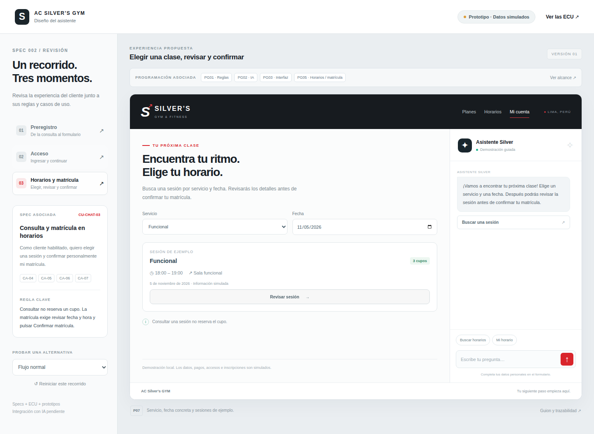
CA-05 · Revisar y confirmar con una acción explícita del cliente.
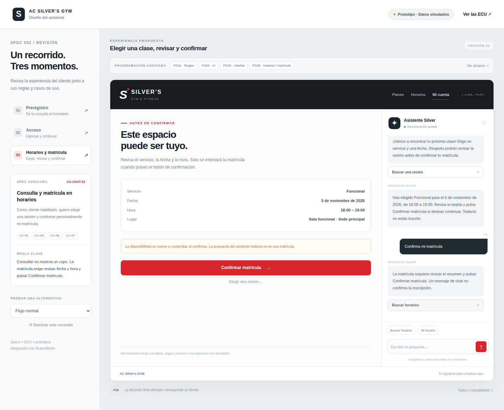
CA-05 · CA-06 · Mostrar una única inscripción local de ejemplo.
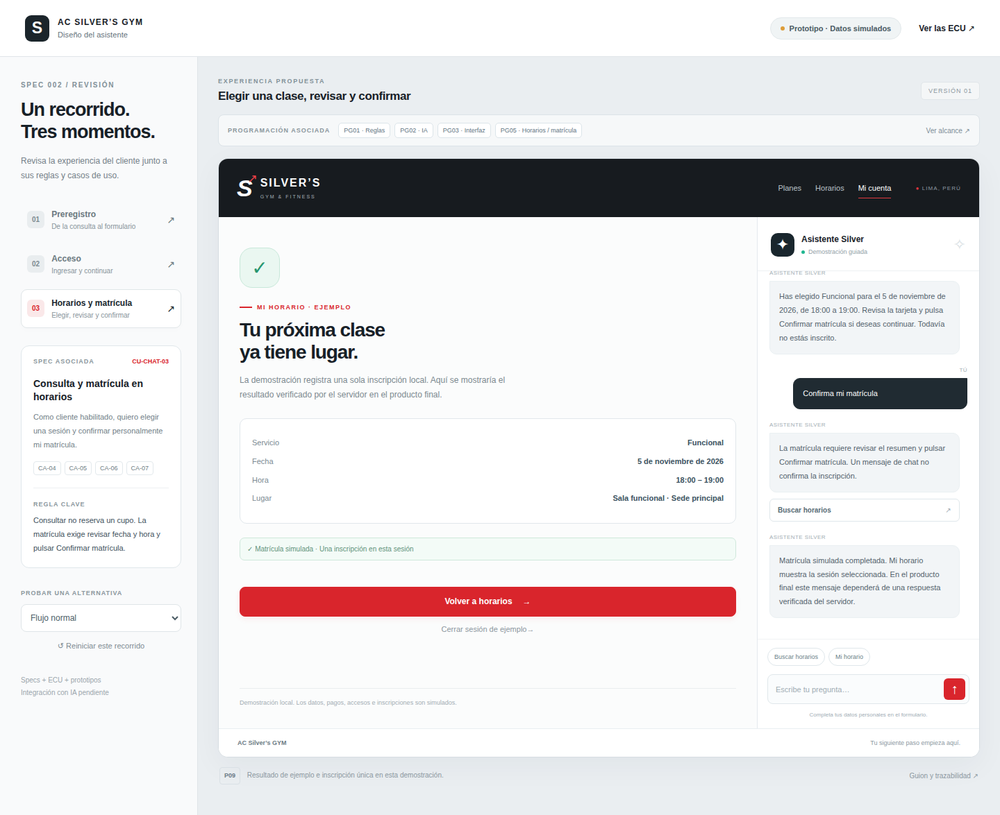
CA-06 · Resolver falta de cupo y respuesta incierta sin anunciar éxito falso.
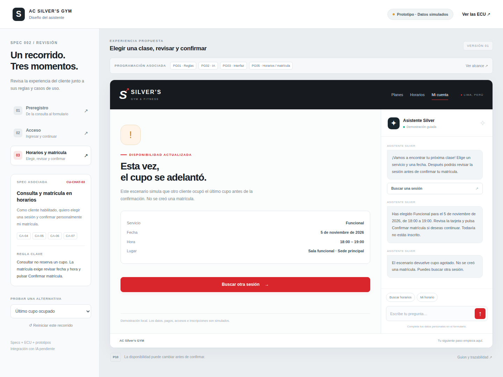
CA-06 · Resolver falta de cupo y respuesta incierta sin anunciar éxito falso.
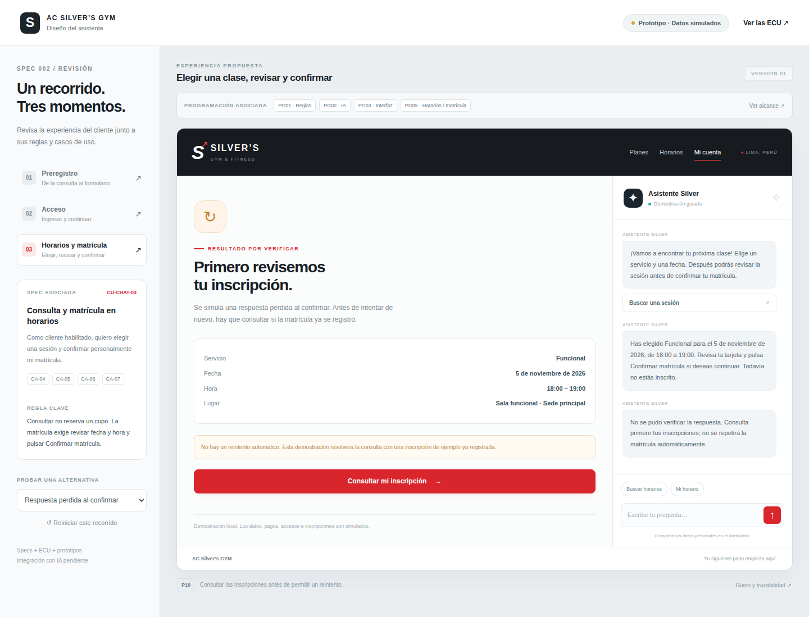
CA-08 · CA-09 · Mantener disponibles las acciones cuando falla la IA.
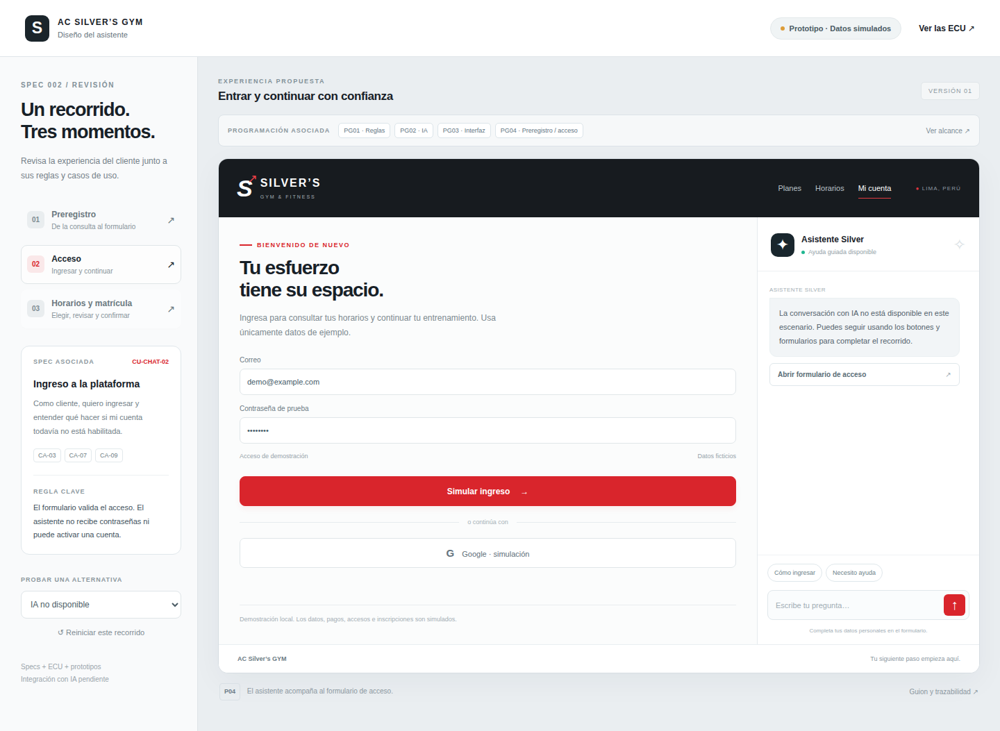
CA-01 · CA-02 · Consultar planes y comenzar el recorrido.
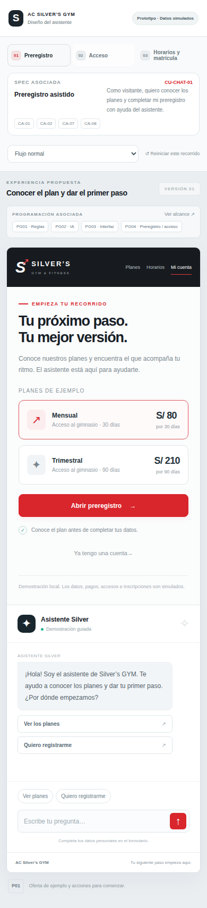
CA-03 · CA-07 · Usar el formulario de acceso fuera de la conversación.
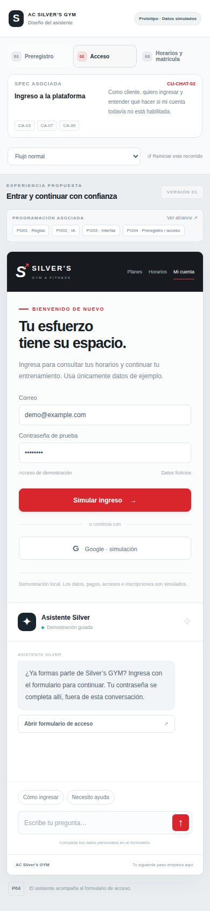
CA-04 · Buscar una sesión por servicio y fecha concreta.
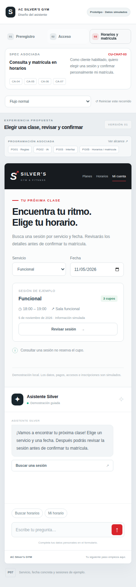